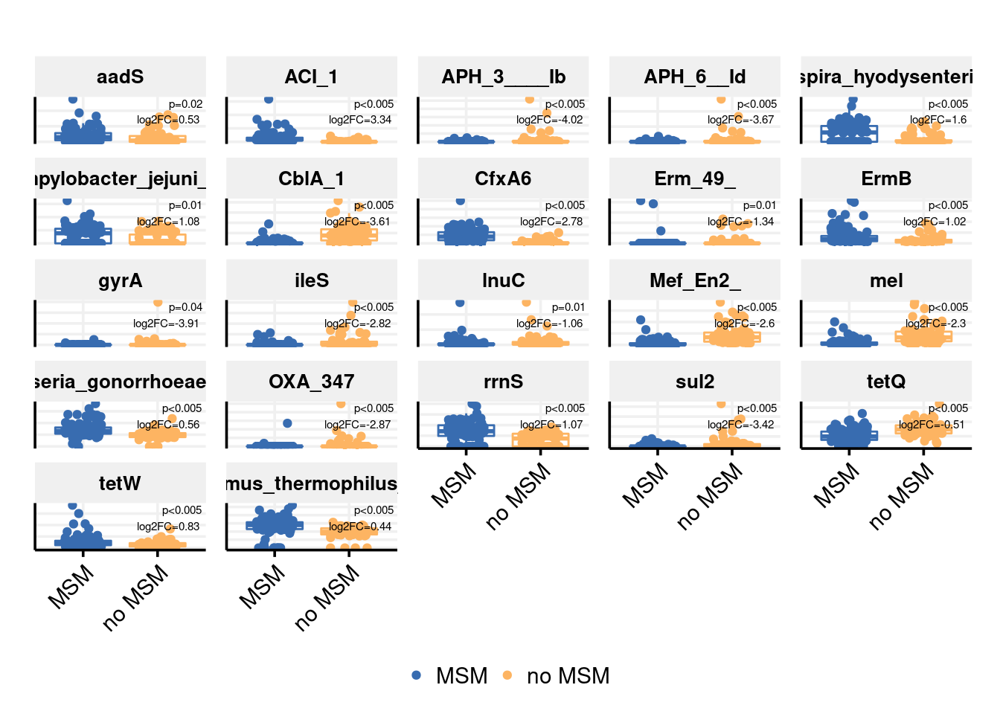
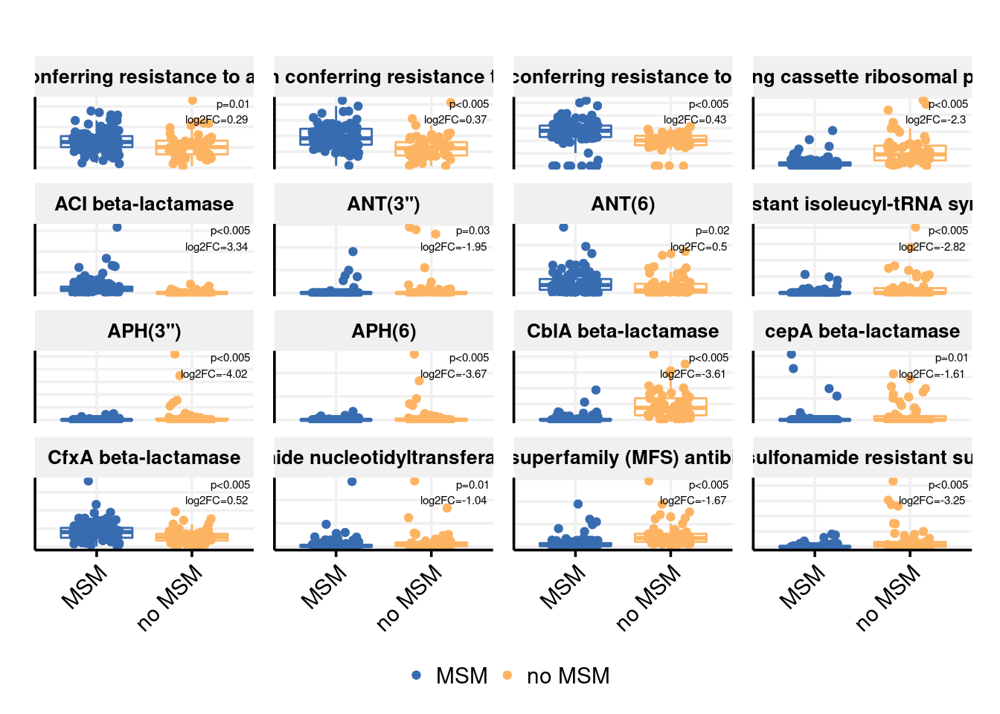
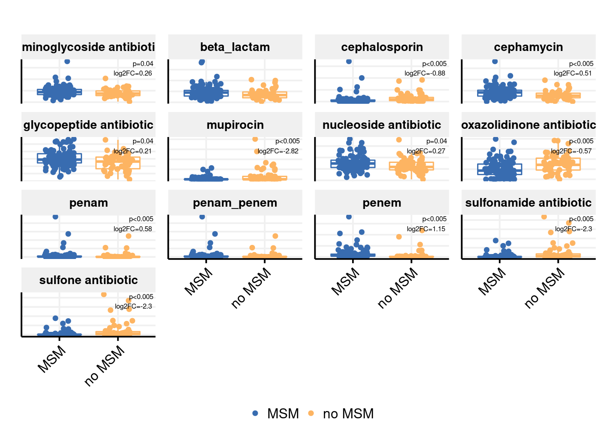
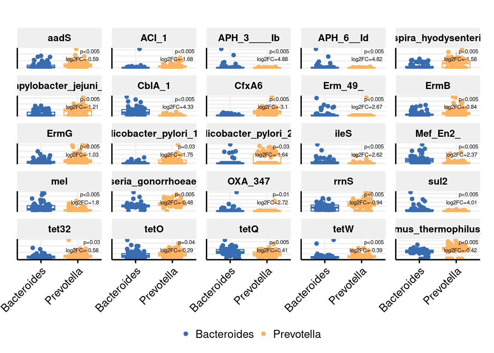
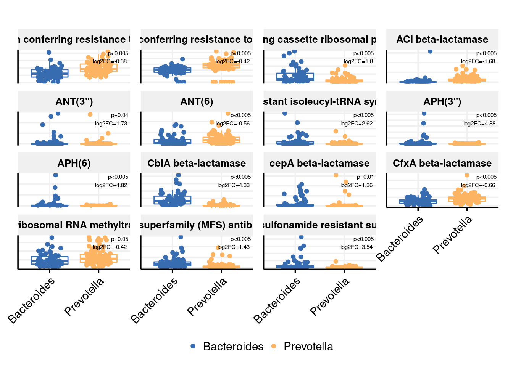
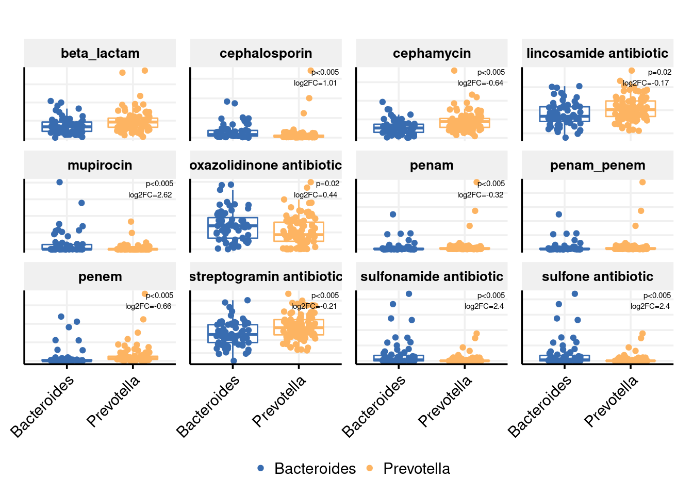
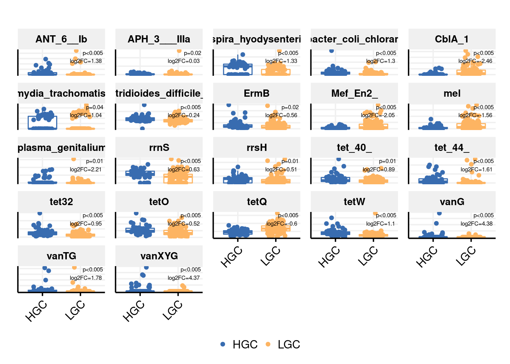
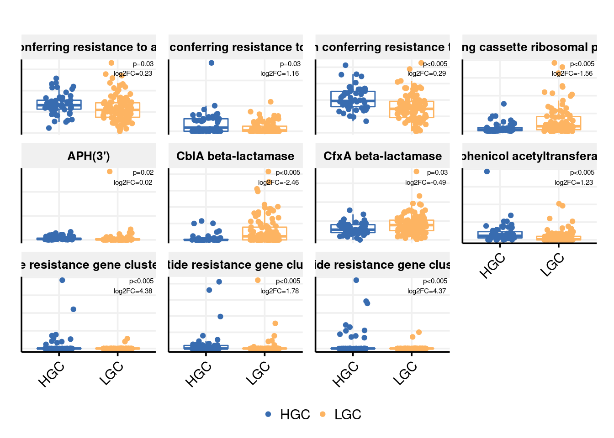
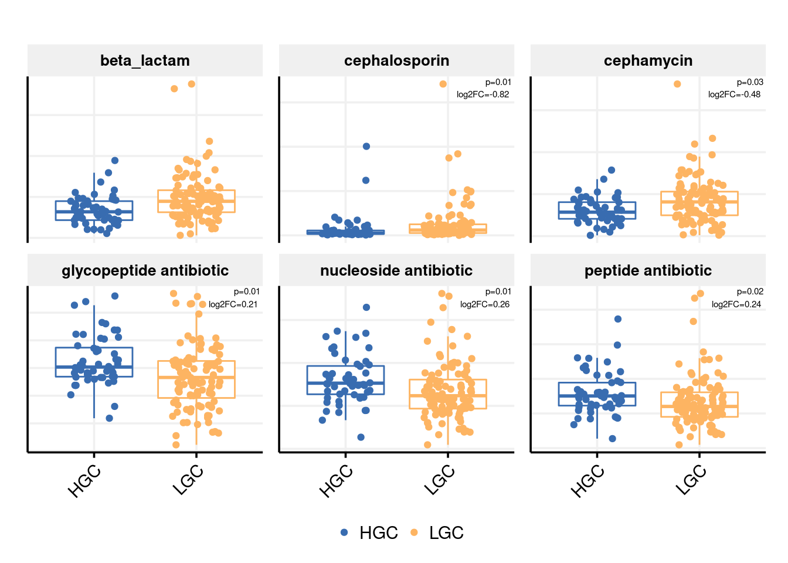

Last updated: 2022-12-10
Checks: 6 1
Knit directory: 2022_Rubio_MetaHIV/
This reproducible R Markdown analysis was created with workflowr (version 1.7.0). The Checks tab describes the reproducibility checks that were applied when the results were created. The Past versions tab lists the development history.
The R Markdown is untracked by Git. To know which version of the R Markdown file created these results, you’ll want to first commit it to the Git repo. If you’re still working on the analysis, you can ignore this warning. When you’re finished, you can run wflow_publish to commit the R Markdown file and build the HTML.
Great job! The global environment was empty. Objects defined in the global environment can affect the analysis in your R Markdown file in unknown ways. For reproduciblity it’s best to always run the code in an empty environment.
The command set.seed(20220202) was run prior to running the code in the R Markdown file. Setting a seed ensures that any results that rely on randomness, e.g. subsampling or permutations, are reproducible.
Great job! Recording the operating system, R version, and package versions is critical for reproducibility.
Nice! There were no cached chunks for this analysis, so you can be confident that you successfully produced the results during this run.
Great job! Using relative paths to the files within your workflowr project makes it easier to run your code on other machines.
Great! You are using Git for version control. Tracking code development and connecting the code version to the results is critical for reproducibility.
The results in this page were generated with repository version 4aa4878. See the Past versions tab to see a history of the changes made to the R Markdown and HTML files.
Note that you need to be careful to ensure that all relevant files for the analysis have been committed to Git prior to generating the results (you can use wflow_publish or wflow_git_commit). workflowr only checks the R Markdown file, but you know if there are other scripts or data files that it depends on. Below is the status of the Git repository when the results were generated:
Ignored files:
Ignored: .Rhistory
Ignored: .Rproj.user/
Ignored: analysis/.Rhistory
Ignored: output/aribaData/
Ignored: output/grootData/
Untracked files:
Untracked: analysis/differentially_abundant.Rmd
Unstaged changes:
Modified: analysis/PEC3_biplots.Rmd
Modified: code/functions.R
Note that any generated files, e.g. HTML, png, CSS, etc., are not included in this status report because it is ok for generated content to have uncommitted changes.
There are no past versions. Publish this analysis with wflow_publish() to start tracking its development.
library(tidyverse)
library(kableExtra)
library(vegan)
library(ggpubr)
library(glue)
library(patchwork)
library(ggstatsplot)
library(broom)
library(ggthemes)load("output/summarized_ariba.RDA")
load("output/ariba_dist.RDA")
load("output/grouped_rpkm_ariba.RDA")
load("output/grouped_refname_ariba.RDA")
source("code/functions.R")ART_groups<-c("concordant", "discordant ", "early_treated")
gene_richness<-read.delim2("data/Metadata/generichness_data.txt")%>%
select(SampleID, GCount)
metadata<-read_csv("data/Metadata/metadata.csv")%>%
mutate(ratio_CD4_CD8=CD4_absolute/CD8_absolute,
ART=ifelse(Profile %in% ART_groups, "TAR", "No TAR"),
MSM_dic=ifelse(RiskGroup2=="msm", "MSM", "no MSM"))%>%
inner_join(gene_richness, by="SampleID")
rm(ART_groups, gene_richness)amr_sexualp<-sig_AMR_clin_dic(ariba_rpkm, metadata, refname_all_ariba, MSM_dic)
amr_sexualp$sig_data%>%select(-ref_name)%>%select(`ARO Name`, everything())%>%
kable()%>%kable_paper("striped")%>%scroll_box(width = "100%", height = "500px")| ARO Name | MSM | no MSM | p.adjust | log2f | ARO Term | ARO Accession | NCBI | init_final | CVTERM ID | Protein Accession | DNA Accession | AMR Gene Family | Drug Class | Resistance Mechanism |
|---|---|---|---|---|---|---|---|---|---|---|---|---|---|---|
| aadS | 14.882782 | 3.914700 | 0.0212659 | 0.5279017 | aadS | 3004683 | M72415 . 1 | 1120_1984 | 42732 | AAA27459.1 | M72415.1 | ANT(6) | aminoglycoside antibiotic | antibiotic inactivation |
| ACI-1 | 3.298008 | 0.000000 | 0.0000000 | 3.3416521 | ACI_1 | 3004359 | AJ007350 . 1 | 239_1094 | 41531 | CAB51471.1 | AJ007350.1 | ACI beta-lactamase | cephalosporin;penam;penem | antibiotic inactivation |
| APH(3’’)-Ib | 0.000000 | 0.000000 | 0.0018350 | -4.0177080 | APH_3____Ib | 3002639 | AF313472 | 15593_16397 | 39039 | ABK33456.1 | AF313472 | APH(3’’) | aminoglycoside antibiotic | antibiotic inactivation |
| APH(6)-Id | 0.000000 | 0.000000 | 0.0033394 | -3.6689099 | APH_6__Id | 3002660 | AF024602 | 3155_3992 | 39060 | AAC23556.1 | AF024602 | APH(6) | aminoglycoside antibiotic | antibiotic inactivation |
| Brachyspira hyodysenteriae 23S rRNA with mutation conferring resistance to tylosin | 11.866585 | 0.000000 | 0.0014422 | 1.5974215 | Brachyspira_hyodysenteriae_23S | 3004133 | NZ_CP015910 . 2 | 2512812_2515808 | 41260 | NA | NZ_CP015910.2 | 23S rRNA with mutation conferring resistance to macrolide antibiotics | glycopeptide antibiotic;lincosamide antibiotic;macrolide antibiotic;phenicol antibiotic;pleuromutilin antibiotic;streptogramin antibiotic | antibiotic target alteration |
| Campylobacter jejuni 23S rRNA with mutation conferring resistance to erythromycin | 15.369305 | 0.000000 | 0.0116872 | 1.0825029 | Campylobacter_jejuni_23S | 3004546 | NR_076226 . 1 | 0_2912 | 42445 | NA | NR_076226.1 | 23S rRNA with mutation conferring resistance to macrolide antibiotics | glycopeptide antibiotic;lincosamide antibiotic;macrolide antibiotic;phenicol antibiotic;pleuromutilin antibiotic;streptogramin antibiotic | antibiotic target alteration |
| CblA-1 | 0.000000 | 15.228072 | 0.0000000 | -3.6113498 | CblA_1 | 3002999 | GQ343019 | 132_1023 | 39433 | ACT97415.1 | GQ343019 | CblA beta-lactamase | cephalosporin | antibiotic inactivation |
| CfxA6 | 79.527974 | 0.000000 | 0.0000000 | 2.7760103 | CfxA6 | 3003097 | GQ342996 | 797_1793 | 39650 | ACT97371.1 | GQ342996 | CfxA beta-lactamase | cephamycin | antibiotic inactivation |
| Erm(49) | 0.000000 | 0.000000 | 0.0116872 | -1.3449421 | Erm_49_ | 3004626 | MWVR01000009 . 1 | 34384_35299 | 42608 | OPG86592.1 | MWVR01000009.1 | Erm 23S ribosomal RNA methyltransferase | lincosamide antibiotic;macrolide antibiotic;streptogramin antibiotic | antibiotic target alteration |
| ErmB | 19.094662 | 9.602396 | 0.0006608 | 1.0239510 | ErmB | 3000375 | AF242872 . 1 | 2131_2878 | 36514 | AAF86219.1 | AF242872.1 | Erm 23S ribosomal RNA methyltransferase | lincosamide antibiotic;macrolide antibiotic;streptogramin antibiotic | antibiotic target alteration |
| Shigella flexneri gyrA conferring resistance to fluoroquinolones | 0.000000 | 0.000000 | 0.0429333 | -3.9132044 | gyrA | 3003940 | AE005674 . 2 | 2352231_2354859 | 40664 | AAN43827.1 | AE005674.2 | fluoroquinolone resistant gyrA | fluoroquinolone antibiotic;nybomycin | antibiotic target alteration |
| Bifidobacterium bifidum ileS conferring resistance to mupirocin | 0.000000 | 0.000000 | 0.0018350 | -2.8160159 | ileS | 3003730 | CP001840 . 1 | 1610636_1613960 | 40419 | ADP36409.1 | CP001840.1 | antibiotic-resistant isoleucyl-tRNA synthetase (ileS) | mupirocin | antibiotic target alteration |
| lnuC | 3.263237 | 8.830028 | 0.0101803 | -1.0565239 | lnuC | 3002837 | AY928180 | 0_495 | 39271 | AAY32951.1 | AY928180 | lincosamide nucleotidyltransferase (LNU) | lincosamide antibiotic | antibiotic inactivation |
| Mef(En2) | 1.856331 | 33.230402 | 0.0000000 | -2.5962532 | Mef_En2_ | 3004659 | AF251288 . 1 | 794_2000 | 42698 | AAF74725.1 | AF251288.1 | major facilitator superfamily (MFS) antibiotic efflux pump | macrolide antibiotic | antibiotic efflux |
| mel | 2.268907 | 16.919067 | 0.0000000 | -2.2994466 | mel | 3000616 | AF227521 . 1 | 3269_4487 | 36910 | AAL73129.1 | AF227521.1 | ABC-F ATP-binding cassette ribosomal protection protein | lincosamide antibiotic;macrolide antibiotic;oxazolidinone antibiotic;phenicol antibiotic;pleuromutilin antibiotic;streptogramin antibiotic;tetracycline antibiotic | antibiotic target protection |
| Neisseria gonorrhoeae 23S rRNA with mutation conferring resistance to azithromycin | 26.508692 | 19.867192 | 0.0000001 | 0.5555807 | Neisseria_gonorrhoeae_23S | 3004836 | NR_103957 | 0_2910 | 42966 | NA | NR_103957 | 23S rRNA with mutation conferring resistance to macrolide antibiotics | glycopeptide antibiotic;lincosamide antibiotic;macrolide antibiotic;phenicol antibiotic;pleuromutilin antibiotic;streptogramin antibiotic | antibiotic target alteration |
| OXA-347 | 0.000000 | 0.000000 | 0.0014748 | -2.8749332 | OXA_347 | 3001777 | JN086160 | 1582_2407 | 38177 | AET35493.1 | JN086160 | OXA beta-lactamase | carbapenem;cephalosporin;penam | antibiotic inactivation |
| Chlamydomonas reinhardtii 16S rRNA (rrnS) mutation conferring resistance to streptomycin | 7.123949 | 3.705063 | 0.0000024 | 1.0716512 | rrnS | 3003978 | NC_005353 . 1 | 38549_40023 | 40814 | NA | NC_005353.1 | 16s rRNA with mutation conferring resistance to aminoglycoside antibiotics | aminoglycoside antibiotic;glycopeptide antibiotic;glycylcycline;nucleoside antibiotic;peptide antibiotic;tetracycline antibiotic | antibiotic target alteration |
| sul2 | 0.000000 | 0.581842 | 0.0000037 | -3.4242043 | sul2 | 3000412 | AY055428 . 1 | 20268_21084 | 36551 | AAL59753.1 | AY055428.1 | sulfonamide resistant sul | sulfonamide antibiotic;sulfone antibiotic | antibiotic target replacement |
| tetQ | 98.181615 | 147.577261 | 0.0000037 | -0.5052155 | tetQ | 3000191 | Z21523 | 0_1974 | 36330 | CAA79727.1 | Z21523 | tetracycline-resistant ribosomal protection protein | tetracycline antibiotic | antibiotic target protection |
| tetW | 40.961647 | 23.278988 | 0.0019238 | 0.8320108 | tetW | 3000194 | AJ222769 . 3 | 3686_5606 | 36333 | CAA10975.1 | AJ222769.3 | tetracycline-resistant ribosomal protection protein | tetracycline antibiotic | antibiotic target protection |
| Thermus thermophilus 23s rRNA conferring resistance to pleuromutilin antibiotics | 27.898481 | 19.691066 | 0.0000001 | 0.4366374 | Thermus_thermophilus_23s | 3005083 | AE017221 . 1 | 1534489_1537382 | 43292 | NA | AE017221.1 | 23S rRNA with mutation conferring resistance to pleuromutilin antibiotics | glycopeptide antibiotic;lincosamide antibiotic;macrolide antibiotic;phenicol antibiotic;pleuromutilin antibiotic;streptogramin antibiotic | antibiotic target alteration |
sig_boxplot_logdata(amr_sexualp$data_plot, amr_sexualp$sig_data,MSM_dic, `ARO Term`)
genefamily_sexualp<-sig_group_clin_dic(ariba_rpkm_genefamily, metadata, refname_ariba_genefamily, MSM_dic)
genefamily_sexualp$sig_data%>%
kable()%>%kable_paper("striped")%>%scroll_box(width = "100%", height = "500px")| group_name | MSM | no MSM | p.adjust | log2f | ARO Name | Drug Class |
|---|---|---|---|---|---|---|
| 16s rRNA with mutation conferring resistance to aminoglycoside antibiotics | 126.090699 | 101.1275538 | 0.0127062 | 0.2921333 | Mycobacteroides chelonae 16S rRNA mutation conferring resistance to neomycin;Neisseria meningitidis 16S rRNA mutation conferring resistance to spectinomycin;Pasteurella multocida 16S rRNA mutation conferring resistance to spectinomycin;Chlamydomonas reinhardtii 16S rRNA (rrnS) mutation conferring resistance to streptomycin;Escherichia coli 16S rRNA (rrsH) mutation conferring resistance to spectinomycin;Chlamydophila psittaci 16S rRNA mutation conferring resistance to spectinomycin;Salmonella enterica 16S rRNA (rrsD) mutation conferring resistance to spectinomycin;Escherichia coli 16S rRNA (rrsC) mutation conferring resistance to kasugamicin;Mycobacterium tuberculosis 16S rRNA mutation conferring resistance to capreomycin;Mycolicibacterium smegmatis 16S rRNA (rrsB) mutation conferring resistance to hygromycin B;Neisseria gonorrhoeae 16S rRNA mutation conferring resistance to spectinomycin;Mycobacteroides abscessus 16S rRNA mutation conferring resistance to gentamicin | aminoglycoside antibiotic;glycopeptide antibiotic;glycylcycline;nucleoside antibiotic;peptide antibiotic;tetracycline antibiotic |
| 23S rRNA with mutation conferring resistance to macrolide antibiotics | 142.343377 | 110.8924643 | 0.0000010 | 0.3718613 | Clostridioides difficile 23S rRNA with mutation conferring resistance to erythromycin and clindamycin;Moraxella catarrhalis 23S rRNA with mutation conferring resistance to macrolide antibiotics;Mycoplasma hominis 23S rRNA with mutation conferring resistance to macrolide antibiotics;Neisseria gonorrhoeae 23S rRNA with mutation conferring resistance to azithromycin;Campylobacter jejuni 23S rRNA with mutation conferring resistance to erythromycin;Chlamydia trachomatis 23S rRNA with mutation conferring resistance to macrolide antibiotics;Mycobacterium intracellulare 23S rRNA with mutation conferring resistance to azithromycin;Brachyspira hyodysenteriae 23S rRNA with mutation conferring resistance to tylosin;Helicobacter pylori 23S rRNA with mutation conferring resistance to clarithromycin;Mycoplasma fermentans 23S rRNA with mutation conferring resistance to macrolide antibiotics;Streptomyces ambofaciens 23S rRNA with mutation conferring resistance to macrolide antibiotics;Mycoplasma genitalium 23S rRNA mutations confers resistance to fluoroquinolone and macrolide antibiotics;Mycolicibacterium smegmatis 23S rRNA with mutation conferring resistance to clarithromycin;Mycobacterium avium 23S rRNA with mutation conferring resistance to clarithromycin;Propionibacteria 23S rRNA with mutation conferring resistance to macrolide antibiotics;Mycobacteroides abscessus 23S rRNA with mutation conferring resistance to clarithromycin;Mycobacterium kansasii 23S rRNA with mutation conferring resistance to clarithromycin;Mycoplasma pneumoniae 23S rRNA mutation conferring resistance to erythromycin;Mycobacteroides chelonae 23S rRNA with mutation conferring resistance to clarithromycin;Chlamydomonas reinhardtii 23S rRNA with mutation conferring resistance to erythromycin | glycopeptide antibiotic;lincosamide antibiotic;macrolide antibiotic;phenicol antibiotic;pleuromutilin antibiotic;streptogramin antibiotic |
| 23S rRNA with mutation conferring resistance to pleuromutilin antibiotics | 27.898481 | 20.2589642 | 0.0000001 | 0.4326696 | Thermus thermophilus 23s rRNA conferring resistance to pleuromutilin antibiotics;Mycoplasma gallisepticum 23S rRNA mutation conferring resistance to pleuromutilin antibiotics | glycopeptide antibiotic;lincosamide antibiotic;macrolide antibiotic;phenicol antibiotic;pleuromutilin antibiotic;streptogramin antibiotic |
| ABC-F ATP-binding cassette ribosomal protection protein | 2.268907 | 16.9190666 | 0.0000000 | -2.2987680 | mel;msrC;lsaA;lsaE;lsaC;eatAv | lincosamide antibiotic;macrolide antibiotic;oxazolidinone antibiotic;phenicol antibiotic;pleuromutilin antibiotic;streptogramin antibiotic;tetracycline antibiotic |
| ACI beta-lactamase | 3.298008 | 0.0000000 | 0.0000000 | 3.3416521 | ACI-1 | cephalosporin;penam;penem |
| ANT(3’’) | 0.000000 | 0.0000000 | 0.0305915 | -1.9490119 | aadA24;aadA2;aadA8;aadA;aadA5;aadA13;aadA17 | aminoglycoside antibiotic |
| ANT(6) | 16.398407 | 4.9907016 | 0.0171951 | 0.4961034 | ANT(6)-Ia;aadS;ANT(6)-Ib | aminoglycoside antibiotic |
| antibiotic-resistant isoleucyl-tRNA synthetase (ileS) | 0.000000 | 0.0000000 | 0.0009632 | -2.8160159 | Bifidobacterium bifidum ileS conferring resistance to mupirocin | mupirocin |
| APH(3’’) | 0.000000 | 0.0000000 | 0.0009632 | -4.0177080 | APH(3’’)-Ib | aminoglycoside antibiotic |
| APH(6) | 0.000000 | 0.0000000 | 0.0017879 | -3.6689099 | APH(6)-Id | aminoglycoside antibiotic |
| CblA beta-lactamase | 0.000000 | 15.2280718 | 0.0000000 | -3.6113498 | CblA-1 | cephalosporin |
| cepA beta-lactamase | 0.000000 | 0.0000000 | 0.0058267 | -1.6101291 | CepA-44;cepA;CepA-29;CepA-49 | cephalosporin |
| CfxA beta-lactamase | 161.714766 | 107.9193077 | 0.0033750 | 0.5172903 | CfxA2;CfxA6;CfxA3;CfxA5;CfxA4 | cephamycin |
| lincosamide nucleotidyltransferase (LNU) | 3.282264 | 8.8300284 | 0.0072828 | -1.0403774 | lnuC;LnuP | lincosamide antibiotic |
| major facilitator superfamily (MFS) antibiotic efflux pump | 8.315777 | 39.2127009 | 0.0000000 | -1.6672508 | Mef(En2);tet(40);emrA;emrK;mdtN;mdtO;Klebsiella pneumoniae KpnE;Klebsiella pneumoniae KpnF;Klebsiella pneumoniae KpnG;tet(A);Escherichia coli mdfA;tetR;tetA(P);efmA;qacE;tet(C);emrB;emrR;emrY;mdtG;mdtH;mdtM;mdtP;qacEdelta1;tet(B);mef(B);tet(L);tet(D) | macrolide antibiotic;tetracycline antibiotic;fluoroquinolone antibiotic;acridine dye;disinfecting agents and intercalating dyes;nucleoside antibiotic;aminoglycoside antibiotic;cephalosporin;peptide antibiotic;rifamycin antibiotic;carbapenem;penam;penem;benzalkonium chloride;rhodamine;fosfomycin;lincosamide antibiotic;phenicol antibiotic |
| sulfonamide resistant sul | 0.000000 | 0.9966082 | 0.0000010 | -3.2498666 | sul2;sul1;sul3 | sulfonamide antibiotic;sulfone antibiotic |
sig_boxplot_logdata(genefamily_sexualp$data_plot, genefamily_sexualp$sig_data,MSM_dic, group_name)
drugclass_sexualp<-sig_group_clin_dic(ariba_rpkm_drugclass, metadata, refname_ariba_drugclass, MSM_dic)
drugclass_sexualp$sig_data%>%select(-`ARO Name`)%>%
kable()%>%kable_paper("striped")%>%scroll_box(width = "100%", height = "500px")| group_name | MSM | no MSM | p.adjust | log2f | AMR Gene Family |
|---|---|---|---|---|---|
| aminoglycoside antibiotic | 175.490714 | 150.3168902 | 0.0445282 | 0.2560881 | APH(3’);16s rRNA with mutation conferring resistance to aminoglycoside antibiotics;ANT(6);ANT(3’‘);16S rRNA with mutation conferring resistance to tetracycline derivatives;APH(3’‘);APH(6);ATP-binding cassette (ABC) antibiotic efflux pump;major facilitator superfamily (MFS) antibiotic efflux pump;resistance-nodulation-cell division (RND) antibiotic efflux pump;AAC(6’);APH(2’’);16s rRNA with mutation conferring resistance to peptide antibiotics;MipA-interacting Protein;kdpDE;23s rRNA with mutation conferring resistance to aminoglycoside antibiotics;AAC(3);ANT(9);amp acetyltransferase;APH(4) |
| cephalosporin | 5.963062 | 17.9371071 | 0.0000169 | -0.8802745 | CblA beta-lactamase;ACI beta-lactamase;OXA beta-lactamase;resistance-nodulation-cell division (RND) antibiotic efflux pump;CTX-M beta-lactamase;cepA beta-lactamase;EC beta-lactamase;ATP-binding cassette (ABC) antibiotic efflux pump;major facilitator superfamily (MFS) antibiotic efflux pump;ampC-type beta-lactamase;General Bacterial Porin with reduced permeability to beta-lactams;ACC beta-lactamase;SHV beta-lactamase;TEM beta-lactamase;Penicillin-binding protein mutations conferring resistance to beta-lactam antibiotics;ACT beta-lactamase |
| cephamycin | 167.577520 | 108.6251482 | 0.0022136 | 0.5063137 | CfxA beta-lactamase;resistance-nodulation-cell division (RND) antibiotic efflux pump;ATP-binding cassette (ABC) antibiotic efflux pump;major facilitator superfamily (MFS) antibiotic efflux pump;General Bacterial Porin with reduced permeability to beta-lactams;Penicillin-binding protein mutations conferring resistance to beta-lactam antibiotics;ACT beta-lactamase;CMY beta-lactamase |
| glycopeptide antibiotic | 389.929560 | 363.3586006 | 0.0445282 | 0.2059601 | 23S rRNA with mutation conferring resistance to macrolide antibiotics;16s rRNA with mutation conferring resistance to aminoglycoside antibiotics;23S rRNA with mutation conferring resistance to linezolid antibiotics;23S rRNA with mutation conferring resistance to streptogramins antibiotics;23S rRNA with mutation conferring resistance to pleuromutilin antibiotics;23S rRNA with mutation conferring resistance to oxazolidinone antibiotics;glycopeptide resistance gene cluster;vanW;16S rRNA with mutation conferring resistance to tetracycline derivatives;vancomycin-resistant beta prime subunit of RNA polymerase (rpoC);16s rRNA with mutation conferring resistance to peptide antibiotics;van ligase;vanT;vanXY;23s rRNA with mutation conferring resistance to aminoglycoside antibiotics;vanS |
| mupirocin | 0.000000 | 0.0000000 | 0.0004535 | -2.8160158 | antibiotic-resistant isoleucyl-tRNA synthetase (ileS) |
| nucleoside antibiotic | 147.732292 | 117.5530231 | 0.0384167 | 0.2654898 | 16s rRNA with mutation conferring resistance to aminoglycoside antibiotics;streptothricin acetyltransferase (SAT);16S rRNA with mutation conferring resistance to tetracycline derivatives;major facilitator superfamily (MFS) antibiotic efflux pump;16s rRNA with mutation conferring resistance to peptide antibiotics |
| oxazolidinone antibiotic | 42.886576 | 71.5275487 | 0.0031189 | -0.5652056 | 23S rRNA with mutation conferring resistance to linezolid antibiotics;ABC-F ATP-binding cassette ribosomal protection protein;23S rRNA with mutation conferring resistance to oxazolidinone antibiotics;ATP-binding cassette (ABC) antibiotic efflux pump;Cfr 23S ribosomal RNA methyltransferase |
| penam | 4.044615 | 0.7938741 | 0.0000602 | 0.5759933 | ACI beta-lactamase;OXA beta-lactamase;resistance-nodulation-cell division (RND) antibiotic efflux pump;ATP-binding cassette (ABC) antibiotic efflux pump;major facilitator superfamily (MFS) antibiotic efflux pump;ampC-type beta-lactamase;General Bacterial Porin with reduced permeability to beta-lactams;ACC beta-lactamase;LEN beta-lactamase;SHV beta-lactamase;TEM beta-lactamase;Penicillin-binding protein mutations conferring resistance to beta-lactam antibiotics;ACT beta-lactamase |
| penem | 3.693940 | 0.0000000 | 0.0000000 | 1.1454112 | ACI beta-lactamase;ATP-binding cassette (ABC) antibiotic efflux pump;major facilitator superfamily (MFS) antibiotic efflux pump;resistance-nodulation-cell division (RND) antibiotic efflux pump;General Bacterial Porin with reduced permeability to beta-lactams;LEN beta-lactamase;TEM beta-lactamase |
| sulfonamide antibiotic | 0.000000 | 0.9966082 | 0.0000270 | -2.3012181 | sulfonamide resistant sul;sulfonamide resistant dihydropteroate synthase folP |
| sulfone antibiotic | 0.000000 | 0.9966082 | 0.0000270 | -2.3012181 | sulfonamide resistant sul;sulfonamide resistant dihydropteroate synthase folP |
sig_boxplot_logdata(drugclass_sexualp$data_plot, drugclass_sexualp$sig_data,MSM_dic, group_name)
sumtable_sexualp<-sig_summary_table(genefamily_sexualp$sig_data, drugclass_sexualp$sig_data)
sumtable_sexualp%>% kable()%>%kable_paper("striped")%>%scroll_box(width = "100%", height = "500px")| group_name | MSM | no MSM | p.adjust | log2f | different tendency | same tendency |
|---|---|---|---|---|---|---|
| mupirocin | 0.000000 | 0.0000000 | 0.0004535 | -2.8160158 | NA | antibiotic-resistant isoleucyl-tRNA synthetase (ileS) |
| sulfonamide antibiotic | 0.000000 | 0.9966082 | 0.0000270 | -2.3012181 | NA | sulfonamide resistant sul |
| sulfone antibiotic | 0.000000 | 0.9966082 | 0.0000270 | -2.3012181 | NA | sulfonamide resistant sul |
| cephalosporin | 5.963062 | 17.9371071 | 0.0000169 | -0.8802745 | ACI beta-lactamase | CblA beta-lactamase;cepA beta-lactamase;major facilitator superfamily (MFS) antibiotic efflux pump |
| oxazolidinone antibiotic | 42.886576 | 71.5275487 | 0.0031189 | -0.5652056 | NA | ABC-F ATP-binding cassette ribosomal protection protein |
| glycopeptide antibiotic | 389.929560 | 363.3586006 | 0.0445282 | 0.2059601 | NA | 23S rRNA with mutation conferring resistance to macrolide antibiotics;16s rRNA with mutation conferring resistance to aminoglycoside antibiotics;23S rRNA with mutation conferring resistance to pleuromutilin antibiotics |
| aminoglycoside antibiotic | 175.490714 | 150.3168902 | 0.0445282 | 0.2560881 | ANT(3’‘);APH(3’’);APH(6);major facilitator superfamily (MFS) antibiotic efflux pump | 16s rRNA with mutation conferring resistance to aminoglycoside antibiotics;ANT(6) |
| nucleoside antibiotic | 147.732292 | 117.5530231 | 0.0384167 | 0.2654898 | major facilitator superfamily (MFS) antibiotic efflux pump | 16s rRNA with mutation conferring resistance to aminoglycoside antibiotics |
| cephamycin | 167.577520 | 108.6251482 | 0.0022136 | 0.5063137 | major facilitator superfamily (MFS) antibiotic efflux pump | CfxA beta-lactamase |
| penam | 4.044615 | 0.7938741 | 0.0000602 | 0.5759933 | major facilitator superfamily (MFS) antibiotic efflux pump | ACI beta-lactamase |
| penem | 3.693940 | 0.0000000 | 0.0000000 | 1.1454112 | major facilitator superfamily (MFS) antibiotic efflux pump | ACI beta-lactamase |
amr_mcluster<-sig_AMR_clin_dic(ariba_rpkm, filter(metadata, !is.na(Cluster)), refname_all_ariba, Cluster)
amr_mcluster$sig_data%>%select(-ref_name)%>%select(`ARO Name`, everything())%>%
kable()%>%kable_paper("striped")%>%scroll_box(width = "100%", height = "500px")| ARO Name | Bacteroides | Prevotella | p.adjust | log2f | ARO Term | ARO Accession | NCBI | init_final | CVTERM ID | Protein Accession | DNA Accession | AMR Gene Family | Drug Class | Resistance Mechanism |
|---|---|---|---|---|---|---|---|---|---|---|---|---|---|---|
| aadS | 3.750008 | 15.309716 | 0.0037717 | -0.5913625 | aadS | 3004683 | M72415 . 1 | 1120_1984 | 42732 | AAA27459.1 | M72415.1 | ANT(6) | aminoglycoside antibiotic | antibiotic inactivation |
| ACI-1 | 0.000000 | 3.415643 | 0.0000000 | -1.6838920 | ACI_1 | 3004359 | AJ007350 . 1 | 239_1094 | 41531 | CAB51471.1 | AJ007350.1 | ACI beta-lactamase | cephalosporin;penam;penem | antibiotic inactivation |
| APH(3’’)-Ib | 0.000000 | 0.000000 | 0.0005236 | 4.8809105 | APH_3____Ib | 3002639 | AF313472 | 15593_16397 | 39039 | ABK33456.1 | AF313472 | APH(3’’) | aminoglycoside antibiotic | antibiotic inactivation |
| APH(6)-Id | 0.000000 | 0.000000 | 0.0002456 | 4.8224637 | APH_6__Id | 3002660 | AF024602 | 3155_3992 | 39060 | AAC23556.1 | AF024602 | APH(6) | aminoglycoside antibiotic | antibiotic inactivation |
| Brachyspira hyodysenteriae 23S rRNA with mutation conferring resistance to tylosin | 0.000000 | 13.305035 | 0.0004373 | -1.5791577 | Brachyspira_hyodysenteriae_23S | 3004133 | NZ_CP015910 . 2 | 2512812_2515808 | 41260 | NA | NZ_CP015910.2 | 23S rRNA with mutation conferring resistance to macrolide antibiotics | glycopeptide antibiotic;lincosamide antibiotic;macrolide antibiotic;phenicol antibiotic;pleuromutilin antibiotic;streptogramin antibiotic | antibiotic target alteration |
| Campylobacter jejuni 23S rRNA with mutation conferring resistance to erythromycin | 0.000000 | 16.708290 | 0.0028766 | -1.2058205 | Campylobacter_jejuni_23S | 3004546 | NR_076226 . 1 | 0_2912 | 42445 | NA | NR_076226.1 | 23S rRNA with mutation conferring resistance to macrolide antibiotics | glycopeptide antibiotic;lincosamide antibiotic;macrolide antibiotic;phenicol antibiotic;pleuromutilin antibiotic;streptogramin antibiotic | antibiotic target alteration |
| CblA-1 | 13.461840 | 0.000000 | 0.0000000 | 4.3261959 | CblA_1 | 3002999 | GQ343019 | 132_1023 | 39433 | ACT97415.1 | GQ343019 | CblA beta-lactamase | cephalosporin | antibiotic inactivation |
| CfxA6 | 0.000000 | 94.861981 | 0.0000000 | -3.0981908 | CfxA6 | 3003097 | GQ342996 | 797_1793 | 39650 | ACT97371.1 | GQ342996 | CfxA beta-lactamase | cephamycin | antibiotic inactivation |
| Erm(49) | 0.000000 | 0.000000 | 0.0008829 | 2.6687866 | Erm_49_ | 3004626 | MWVR01000009 . 1 | 34384_35299 | 42608 | OPG86592.1 | MWVR01000009.1 | Erm 23S ribosomal RNA methyltransferase | lincosamide antibiotic;macrolide antibiotic;streptogramin antibiotic | antibiotic target alteration |
| ErmB | 9.250104 | 19.211441 | 0.0000296 | -0.8434868 | ErmB | 3000375 | AF242872 . 1 | 2131_2878 | 36514 | AAF86219.1 | AF242872.1 | Erm 23S ribosomal RNA methyltransferase | lincosamide antibiotic;macrolide antibiotic;streptogramin antibiotic | antibiotic target alteration |
| ErmG | 4.128728 | 13.487079 | 0.0004373 | -1.0345222 | ErmG | 3000522 | L42817 | 201_936 | 36661 | AAC37034.1 | L42817 | Erm 23S ribosomal RNA methyltransferase | lincosamide antibiotic;macrolide antibiotic;streptogramin antibiotic | antibiotic target alteration |
| Helicobacter pylori 16S rRNA mutation conferring resistance to tetracycline | 0.000000 | 0.000000 | 0.0317364 | -1.7516578 | Helicobacter_pylori_16S | 3003510 | CP003904 . 1 | 1511156_1512657 | 40112 | NA | CP003904.1 | 16S rRNA with mutation conferring resistance to tetracycline derivatives | aminoglycoside antibiotic;glycopeptide antibiotic;glycylcycline;nucleoside antibiotic;peptide antibiotic;tetracycline antibiotic | antibiotic target alteration |
| Helicobacter pylori 23S rRNA with mutation conferring resistance to clarithromycin | 0.000000 | 0.000000 | 0.0267512 | -1.6386279 | Helicobacter_pylori_23S | 3004134 | AB162858 . 1 | 0_2975 | 41261 | NA | AB162858.1 | 23S rRNA with mutation conferring resistance to macrolide antibiotics | glycopeptide antibiotic;lincosamide antibiotic;macrolide antibiotic;phenicol antibiotic;pleuromutilin antibiotic;streptogramin antibiotic | antibiotic target alteration |
| Bifidobacterium bifidum ileS conferring resistance to mupirocin | 0.000000 | 0.000000 | 0.0046570 | 2.6188337 | ileS | 3003730 | CP001840 . 1 | 1610636_1613960 | 40419 | ADP36409.1 | CP001840.1 | antibiotic-resistant isoleucyl-tRNA synthetase (ileS) | mupirocin | antibiotic target alteration |
| Mef(En2) | 30.481443 | 1.719997 | 0.0000000 | 2.3678041 | Mef_En2_ | 3004659 | AF251288 . 1 | 794_2000 | 42698 | AAF74725.1 | AF251288.1 | major facilitator superfamily (MFS) antibiotic efflux pump | macrolide antibiotic | antibiotic efflux |
| mel | 10.143350 | 2.374035 | 0.0000001 | 1.7963898 | mel | 3000616 | AF227521 . 1 | 3269_4487 | 36910 | AAL73129.1 | AF227521.1 | ABC-F ATP-binding cassette ribosomal protection protein | lincosamide antibiotic;macrolide antibiotic;oxazolidinone antibiotic;phenicol antibiotic;pleuromutilin antibiotic;streptogramin antibiotic;tetracycline antibiotic | antibiotic target protection |
| Neisseria gonorrhoeae 23S rRNA with mutation conferring resistance to azithromycin | 19.389437 | 26.661460 | 0.0000001 | -0.4766362 | Neisseria_gonorrhoeae_23S | 3004836 | NR_103957 | 0_2910 | 42966 | NA | NR_103957 | 23S rRNA with mutation conferring resistance to macrolide antibiotics | glycopeptide antibiotic;lincosamide antibiotic;macrolide antibiotic;phenicol antibiotic;pleuromutilin antibiotic;streptogramin antibiotic | antibiotic target alteration |
| OXA-347 | 0.000000 | 0.000000 | 0.0055153 | 2.7211427 | OXA_347 | 3001777 | JN086160 | 1582_2407 | 38177 | AET35493.1 | JN086160 | OXA beta-lactamase | carbapenem;cephalosporin;penam | antibiotic inactivation |
| Chlamydomonas reinhardtii 16S rRNA (rrnS) mutation conferring resistance to streptomycin | 3.680208 | 7.123949 | 0.0000148 | -0.9442457 | rrnS | 3003978 | NC_005353 . 1 | 38549_40023 | 40814 | NA | NC_005353.1 | 16s rRNA with mutation conferring resistance to aminoglycoside antibiotics | aminoglycoside antibiotic;glycopeptide antibiotic;glycylcycline;nucleoside antibiotic;peptide antibiotic;tetracycline antibiotic | antibiotic target alteration |
| sul2 | 0.000000 | 0.000000 | 0.0000172 | 4.0136518 | sul2 | 3000412 | AY055428 . 1 | 20268_21084 | 36551 | AAL59753.1 | AY055428.1 | sulfonamide resistant sul | sulfonamide antibiotic;sulfone antibiotic | antibiotic target replacement |
| tet32 | 2.287169 | 3.259420 | 0.0267512 | -0.5803426 | tet32 | 3000196 | EU722333 . 1 | 1932_3852 | 36335 | ACH87088.1 | EU722333.1 | tetracycline-resistant ribosomal protection protein | tetracycline antibiotic | antibiotic target protection |
| tetO | 15.430245 | 22.543931 | 0.0408060 | -0.2909876 | tetO | 3000190 | M18896 . 2 | 206_2126 | 36329 | AAA23033.2 | M18896.2 | tetracycline-resistant ribosomal protection protein | tetracycline antibiotic | antibiotic target protection |
| tetQ | 136.575900 | 103.870739 | 0.0004576 | 0.4098089 | tetQ | 3000191 | Z21523 | 0_1974 | 36330 | CAA79727.1 | Z21523 | tetracycline-resistant ribosomal protection protein | tetracycline antibiotic | antibiotic target protection |
| tetW | 23.931750 | 40.961647 | 0.0046570 | -0.3880660 | tetW | 3000194 | AJ222769 . 3 | 3686_5606 | 36333 | CAA10975.1 | AJ222769.3 | tetracycline-resistant ribosomal protection protein | tetracycline antibiotic | antibiotic target protection |
| Thermus thermophilus 23s rRNA conferring resistance to pleuromutilin antibiotics | 20.097653 | 27.989771 | 0.0000000 | -0.4185846 | Thermus_thermophilus_23s | 3005083 | AE017221 . 1 | 1534489_1537382 | 43292 | NA | AE017221.1 | 23S rRNA with mutation conferring resistance to pleuromutilin antibiotics | glycopeptide antibiotic;lincosamide antibiotic;macrolide antibiotic;phenicol antibiotic;pleuromutilin antibiotic;streptogramin antibiotic | antibiotic target alteration |
sig_boxplot_logdata(amr_mcluster$data_plot, amr_mcluster$sig_data,Cluster, `ARO Term`)
genefamily_mcluster<-sig_group_clin_dic(ariba_rpkm_genefamily,filter(metadata, !is.na(Cluster)), refname_ariba_genefamily, Cluster)
genefamily_mcluster$sig_data%>%
kable()%>%kable_paper("striped")%>%scroll_box(width = "100%", height = "500px")| group_name | Bacteroides | Prevotella | p.adjust | log2f | ARO Name | Drug Class |
|---|---|---|---|---|---|---|
| 23S rRNA with mutation conferring resistance to macrolide antibiotics | 111.6913176 | 142.343377 | 0.0000005 | -0.3841650 | Clostridioides difficile 23S rRNA with mutation conferring resistance to erythromycin and clindamycin;Moraxella catarrhalis 23S rRNA with mutation conferring resistance to macrolide antibiotics;Mycoplasma hominis 23S rRNA with mutation conferring resistance to macrolide antibiotics;Neisseria gonorrhoeae 23S rRNA with mutation conferring resistance to azithromycin;Campylobacter jejuni 23S rRNA with mutation conferring resistance to erythromycin;Chlamydia trachomatis 23S rRNA with mutation conferring resistance to macrolide antibiotics;Mycobacterium intracellulare 23S rRNA with mutation conferring resistance to azithromycin;Brachyspira hyodysenteriae 23S rRNA with mutation conferring resistance to tylosin;Helicobacter pylori 23S rRNA with mutation conferring resistance to clarithromycin;Mycoplasma fermentans 23S rRNA with mutation conferring resistance to macrolide antibiotics;Streptomyces ambofaciens 23S rRNA with mutation conferring resistance to macrolide antibiotics;Mycoplasma genitalium 23S rRNA mutations confers resistance to fluoroquinolone and macrolide antibiotics;Mycolicibacterium smegmatis 23S rRNA with mutation conferring resistance to clarithromycin;Mycobacterium avium 23S rRNA with mutation conferring resistance to clarithromycin;Propionibacteria 23S rRNA with mutation conferring resistance to macrolide antibiotics;Mycobacteroides abscessus 23S rRNA with mutation conferring resistance to clarithromycin;Mycobacterium kansasii 23S rRNA with mutation conferring resistance to clarithromycin;Mycoplasma pneumoniae 23S rRNA mutation conferring resistance to erythromycin;Mycobacteroides chelonae 23S rRNA with mutation conferring resistance to clarithromycin;Chlamydomonas reinhardtii 23S rRNA with mutation conferring resistance to erythromycin | glycopeptide antibiotic;lincosamide antibiotic;macrolide antibiotic;phenicol antibiotic;pleuromutilin antibiotic;streptogramin antibiotic |
| 23S rRNA with mutation conferring resistance to pleuromutilin antibiotics | 20.5763970 | 28.098596 | 0.0000000 | -0.4239020 | Thermus thermophilus 23s rRNA conferring resistance to pleuromutilin antibiotics;Mycoplasma gallisepticum 23S rRNA mutation conferring resistance to pleuromutilin antibiotics | glycopeptide antibiotic;lincosamide antibiotic;macrolide antibiotic;phenicol antibiotic;pleuromutilin antibiotic;streptogramin antibiotic |
| ABC-F ATP-binding cassette ribosomal protection protein | 10.1433504 | 2.374035 | 0.0000001 | 1.7969077 | mel;msrC;lsaA;lsaE;lsaC;eatAv | lincosamide antibiotic;macrolide antibiotic;oxazolidinone antibiotic;phenicol antibiotic;pleuromutilin antibiotic;streptogramin antibiotic;tetracycline antibiotic |
| ACI beta-lactamase | 0.0000000 | 3.415643 | 0.0000000 | -1.6838920 | ACI-1 | cephalosporin;penam;penem |
| ANT(3’’) | 0.0000000 | 0.000000 | 0.0365106 | 1.7255273 | aadA24;aadA2;aadA8;aadA;aadA5;aadA13;aadA17 | aminoglycoside antibiotic |
| ANT(6) | 4.2758038 | 17.186902 | 0.0025673 | -0.5608257 | ANT(6)-Ia;aadS;ANT(6)-Ib | aminoglycoside antibiotic |
| antibiotic-resistant isoleucyl-tRNA synthetase (ileS) | 0.0000000 | 0.000000 | 0.0025673 | 2.6188337 | Bifidobacterium bifidum ileS conferring resistance to mupirocin | mupirocin |
| APH(3’’) | 0.0000000 | 0.000000 | 0.0002482 | 4.8809105 | APH(3’’)-Ib | aminoglycoside antibiotic |
| APH(6) | 0.0000000 | 0.000000 | 0.0000948 | 4.8224637 | APH(6)-Id | aminoglycoside antibiotic |
| CblA beta-lactamase | 13.4618405 | 0.000000 | 0.0000000 | 4.3261959 | CblA-1 | cephalosporin |
| cepA beta-lactamase | 0.0000000 | 0.000000 | 0.0106081 | 1.3550401 | CepA-44;cepA;CepA-29;CepA-49 | cephalosporin |
| CfxA beta-lactamase | 106.8306067 | 173.868940 | 0.0000664 | -0.6604477 | CfxA2;CfxA6;CfxA3;CfxA5;CfxA4 | cephamycin |
| Erm 23S ribosomal RNA methyltransferase | 84.6856070 | 113.940464 | 0.0488201 | -0.4163069 | ErmB;ErmF;ErmG;23S rRNA (adenine(2058)-N(6))-methyltransferase Erm(A);ErmX;Erm(49);ErmQ | lincosamide antibiotic;macrolide antibiotic;streptogramin antibiotic |
| major facilitator superfamily (MFS) antibiotic efflux pump | 37.1080088 | 8.315777 | 0.0000000 | 1.4340403 | Mef(En2);tet(40);emrA;emrK;mdtN;mdtO;Klebsiella pneumoniae KpnE;Klebsiella pneumoniae KpnF;Klebsiella pneumoniae KpnG;tet(A);Escherichia coli mdfA;tetR;tetA(P);efmA;qacE;tet(C);emrB;emrR;emrY;mdtG;mdtH;mdtM;mdtP;qacEdelta1;tet(B);mef(B);tet(L);tet(D) | macrolide antibiotic;tetracycline antibiotic;fluoroquinolone antibiotic;acridine dye;disinfecting agents and intercalating dyes;nucleoside antibiotic;aminoglycoside antibiotic;cephalosporin;peptide antibiotic;rifamycin antibiotic;carbapenem;penam;penem;benzalkonium chloride;rhodamine;fosfomycin;lincosamide antibiotic;phenicol antibiotic |
| sulfonamide resistant sul | 0.6303204 | 0.000000 | 0.0000059 | 3.5447399 | sul2;sul1;sul3 | sulfonamide antibiotic;sulfone antibiotic |
sig_boxplot_logdata(genefamily_mcluster$data_plot, genefamily_mcluster$sig_data,Cluster, group_name)
drugclass_mcluster<-sig_group_clin_dic(ariba_rpkm_drugclass, filter(metadata, !is.na(Cluster)), refname_ariba_drugclass, Cluster)
drugclass_mcluster$sig_data%>%select(-`ARO Name`)%>%
kable()%>%kable_paper("striped")%>%scroll_box(width = "100%", height = "500px")| group_name | Bacteroides | Prevotella | p.adjust | log2f | AMR Gene Family |
|---|---|---|---|---|---|
| cephalosporin | 15.6007980 | 5.515455 | 0.0000053 | 1.0061859 | CblA beta-lactamase;ACI beta-lactamase;OXA beta-lactamase;resistance-nodulation-cell division (RND) antibiotic efflux pump;CTX-M beta-lactamase;cepA beta-lactamase;EC beta-lactamase;ATP-binding cassette (ABC) antibiotic efflux pump;major facilitator superfamily (MFS) antibiotic efflux pump;ampC-type beta-lactamase;General Bacterial Porin with reduced permeability to beta-lactams;ACC beta-lactamase;SHV beta-lactamase;TEM beta-lactamase;Penicillin-binding protein mutations conferring resistance to beta-lactam antibiotics;ACT beta-lactamase |
| cephamycin | 106.8306067 | 175.534169 | 0.0000900 | -0.6433642 | CfxA beta-lactamase;resistance-nodulation-cell division (RND) antibiotic efflux pump;ATP-binding cassette (ABC) antibiotic efflux pump;major facilitator superfamily (MFS) antibiotic efflux pump;General Bacterial Porin with reduced permeability to beta-lactams;Penicillin-binding protein mutations conferring resistance to beta-lactam antibiotics;ACT beta-lactamase;CMY beta-lactamase |
| lincosamide antibiotic | 347.4065160 | 404.744738 | 0.0186733 | -0.1735322 | 23S rRNA with mutation conferring resistance to macrolide antibiotics;Erm 23S ribosomal RNA methyltransferase;23S rRNA with mutation conferring resistance to linezolid antibiotics;23S rRNA with mutation conferring resistance to streptogramins antibiotics;23S rRNA with mutation conferring resistance to pleuromutilin antibiotics;lincosamide nucleotidyltransferase (LNU);ABC-F ATP-binding cassette ribosomal protection protein;23S rRNA with mutation conferring resistance to oxazolidinone antibiotics;major facilitator superfamily (MFS) antibiotic efflux pump;ATP-binding cassette (ABC) antibiotic efflux pump;23s rRNA with mutation conferring resistance to aminoglycoside antibiotics;Cfr 23S ribosomal RNA methyltransferase |
| mupirocin | 0.0000000 | 0.000000 | 0.0013966 | 2.6188337 | antibiotic-resistant isoleucyl-tRNA synthetase (ileS) |
| oxazolidinone antibiotic | 69.5715971 | 43.228885 | 0.0237746 | 0.4357409 | 23S rRNA with mutation conferring resistance to linezolid antibiotics;ABC-F ATP-binding cassette ribosomal protection protein;23S rRNA with mutation conferring resistance to oxazolidinone antibiotics;ATP-binding cassette (ABC) antibiotic efflux pump;Cfr 23S ribosomal RNA methyltransferase |
| penam | 1.5827140 | 3.914661 | 0.0001563 | -0.3248412 | ACI beta-lactamase;OXA beta-lactamase;resistance-nodulation-cell division (RND) antibiotic efflux pump;ATP-binding cassette (ABC) antibiotic efflux pump;major facilitator superfamily (MFS) antibiotic efflux pump;ampC-type beta-lactamase;General Bacterial Porin with reduced permeability to beta-lactams;ACC beta-lactamase;LEN beta-lactamase;SHV beta-lactamase;TEM beta-lactamase;Penicillin-binding protein mutations conferring resistance to beta-lactam antibiotics;ACT beta-lactamase |
| penem | 0.0000000 | 3.693940 | 0.0000000 | -0.6554197 | ACI beta-lactamase;ATP-binding cassette (ABC) antibiotic efflux pump;major facilitator superfamily (MFS) antibiotic efflux pump;resistance-nodulation-cell division (RND) antibiotic efflux pump;General Bacterial Porin with reduced permeability to beta-lactams;LEN beta-lactamase;TEM beta-lactamase |
| streptogramin antibiotic | 341.6890906 | 394.068241 | 0.0035793 | -0.2067510 | 23S rRNA with mutation conferring resistance to macrolide antibiotics;Erm 23S ribosomal RNA methyltransferase;23S rRNA with mutation conferring resistance to linezolid antibiotics;23S rRNA with mutation conferring resistance to streptogramins antibiotics;23S rRNA with mutation conferring resistance to pleuromutilin antibiotics;ABC-F ATP-binding cassette ribosomal protection protein;23S rRNA with mutation conferring resistance to oxazolidinone antibiotics;23s rRNA with mutation conferring resistance to aminoglycoside antibiotics;Cfr 23S ribosomal RNA methyltransferase |
| sulfonamide antibiotic | 0.6303204 | 0.000000 | 0.0001368 | 2.4048129 | sulfonamide resistant sul;sulfonamide resistant dihydropteroate synthase folP |
| sulfone antibiotic | 0.6303204 | 0.000000 | 0.0001368 | 2.4048129 | sulfonamide resistant sul;sulfonamide resistant dihydropteroate synthase folP |
sig_boxplot_logdata(drugclass_mcluster$data_plot, drugclass_mcluster$sig_data,Cluster, group_name)
sumtable_mcluster<-sig_summary_table(genefamily_mcluster$sig_data, drugclass_mcluster$sig_data)
sumtable_mcluster%>% kable()%>%kable_paper("striped")%>%scroll_box(width = "100%", height = "500px")| group_name | Bacteroides | Prevotella | p.adjust | log2f | different tendency | same tendency |
|---|---|---|---|---|---|---|
| penem | 0.0000000 | 3.693940 | 0.0000000 | -0.6554197 | major facilitator superfamily (MFS) antibiotic efflux pump | ACI beta-lactamase |
| cephamycin | 106.8306067 | 175.534169 | 0.0000900 | -0.6433642 | major facilitator superfamily (MFS) antibiotic efflux pump | CfxA beta-lactamase |
| penam | 1.5827140 | 3.914661 | 0.0001563 | -0.3248412 | major facilitator superfamily (MFS) antibiotic efflux pump | ACI beta-lactamase |
| streptogramin antibiotic | 341.6890906 | 394.068241 | 0.0035793 | -0.2067510 | ABC-F ATP-binding cassette ribosomal protection protein | 23S rRNA with mutation conferring resistance to macrolide antibiotics;Erm 23S ribosomal RNA methyltransferase;23S rRNA with mutation conferring resistance to pleuromutilin antibiotics |
| lincosamide antibiotic | 347.4065160 | 404.744738 | 0.0186733 | -0.1735322 | ABC-F ATP-binding cassette ribosomal protection protein;major facilitator superfamily (MFS) antibiotic efflux pump | 23S rRNA with mutation conferring resistance to macrolide antibiotics;Erm 23S ribosomal RNA methyltransferase;23S rRNA with mutation conferring resistance to pleuromutilin antibiotics |
| oxazolidinone antibiotic | 69.5715971 | 43.228885 | 0.0237746 | 0.4357409 | NA | ABC-F ATP-binding cassette ribosomal protection protein |
| cephalosporin | 15.6007980 | 5.515455 | 0.0000053 | 1.0061859 | ACI beta-lactamase | CblA beta-lactamase;cepA beta-lactamase;major facilitator superfamily (MFS) antibiotic efflux pump |
| sulfonamide antibiotic | 0.6303204 | 0.000000 | 0.0001368 | 2.4048129 | NA | sulfonamide resistant sul |
| sulfone antibiotic | 0.6303204 | 0.000000 | 0.0001368 | 2.4048129 | NA | sulfonamide resistant sul |
| mupirocin | 0.0000000 | 0.000000 | 0.0013966 | 2.6188337 | NA | antibiotic-resistant isoleucyl-tRNA synthetase (ileS) |
amr_grich<-sig_AMR_clin_dic(ariba_rpkm, metadata, refname_all_ariba, GCount)
amr_grich$sig_data%>%select(-ref_name)%>%select(`ARO Name`, everything())%>%
kable()%>%kable_paper("striped")%>%scroll_box(width = "100%", height = "500px")| ARO Name | HGC | LGC | p.adjust | log2f | ARO Term | ARO Accession | NCBI | init_final | CVTERM ID | Protein Accession | DNA Accession | AMR Gene Family | Drug Class | Resistance Mechanism |
|---|---|---|---|---|---|---|---|---|---|---|---|---|---|---|
| ANT(6)-Ib | 0.0000000 | 0.0000000 | 0.0011499 | 1.3786196 | ANT_6__Ib | 3002629 | FN594949 | 27481_28339 | 39029 | CBH51824.1 | FN594949 | ANT(6) | aminoglycoside antibiotic | antibiotic inactivation |
| APH(3’)-IIIa | 7.0400462 | 3.2582307 | 0.0172338 | 0.0255814 | APH_3___IIIa | 3002647 | CP004067 | 52914_53709 | 39047 | AGV10830.1 | CP004067 | APH(3’) | aminoglycoside antibiotic | antibiotic inactivation |
| Brachyspira hyodysenteriae 23S rRNA with mutation conferring resistance to tylosin | 18.6217350 | 0.0000000 | 0.0001281 | 1.3336257 | Brachyspira_hyodysenteriae_23S | 3004133 | NZ_CP015910 . 2 | 2512812_2515808 | 41260 | NA | NZ_CP015910.2 | 23S rRNA with mutation conferring resistance to macrolide antibiotics | glycopeptide antibiotic;lincosamide antibiotic;macrolide antibiotic;phenicol antibiotic;pleuromutilin antibiotic;streptogramin antibiotic | antibiotic target alteration |
| Campylobacter coli chloramphenicol acetyltransferase | 4.1410469 | 0.4524203 | 0.0001015 | 1.3017074 | Campylobacter_coli_chloramphenicol | 3004454 | M35190 . 1 | 308_932 | 41665 | AAA23018.1 | M35190.1 | chloramphenicol acetyltransferase (CAT) | phenicol antibiotic | antibiotic inactivation |
| CblA-1 | 0.0000000 | 4.3719988 | 0.0001081 | -2.4625431 | CblA_1 | 3002999 | GQ343019 | 132_1023 | 39433 | ACT97415.1 | GQ343019 | CblA beta-lactamase | cephalosporin | antibiotic inactivation |
| Chlamydia trachomatis 23S rRNA with mutation conferring resistance to macrolide antibiotics | 0.0000000 | 0.0000000 | 0.0423122 | 1.0436956 | Chlamydia_trachomatis_23S | 3004174 | NR_076160 . 1 | 0_2940 | 41325 | NA | NR_076160.1 | 23S rRNA with mutation conferring resistance to macrolide antibiotics | glycopeptide antibiotic;lincosamide antibiotic;macrolide antibiotic;phenicol antibiotic;pleuromutilin antibiotic;streptogramin antibiotic | antibiotic target alteration |
| Clostridioides difficile 23S rRNA with mutation conferring resistance to erythromycin and clindamycin | 55.3181696 | 47.0064731 | 0.0005006 | 0.2419625 | Clostridioides_difficile_23S | 3004654 | NR_076234 . 1 | 0_2900 | 42686 | NA | NR_076234.1 | 23S rRNA with mutation conferring resistance to macrolide antibiotics | glycopeptide antibiotic;lincosamide antibiotic;macrolide antibiotic;phenicol antibiotic;pleuromutilin antibiotic;streptogramin antibiotic | antibiotic target alteration |
| ErmB | 19.1744639 | 10.8468564 | 0.0190928 | 0.5563238 | ErmB | 3000375 | AF242872 . 1 | 2131_2878 | 36514 | AAF86219.1 | AF242872.1 | Erm 23S ribosomal RNA methyltransferase | lincosamide antibiotic;macrolide antibiotic;streptogramin antibiotic | antibiotic target alteration |
| Mef(En2) | 2.4581548 | 11.7741358 | 0.0007969 | -2.0457906 | Mef_En2_ | 3004659 | AF251288 . 1 | 794_2000 | 42698 | AAF74725.1 | AF251288.1 | major facilitator superfamily (MFS) antibiotic efflux pump | macrolide antibiotic | antibiotic efflux |
| mel | 2.3464333 | 7.0115209 | 0.0047579 | -1.5613928 | mel | 3000616 | AF227521 . 1 | 3269_4487 | 36910 | AAL73129.1 | AF227521.1 | ABC-F ATP-binding cassette ribosomal protection protein | lincosamide antibiotic;macrolide antibiotic;oxazolidinone antibiotic;phenicol antibiotic;pleuromutilin antibiotic;streptogramin antibiotic;tetracycline antibiotic | antibiotic target protection |
| Mycoplasma genitalium 23S rRNA mutations confers resistance to fluoroquinolone and macrolide antibiotics | 0.0000000 | 0.0000000 | 0.0126195 | 2.2067283 | Mycoplasma_genitalium_23S | 3004616 | L43967 . 2 | 171727_174461 | 42584 | NA | L43967.2 | 23S rRNA with mutation conferring resistance to macrolide antibiotics | glycopeptide antibiotic;lincosamide antibiotic;macrolide antibiotic;phenicol antibiotic;pleuromutilin antibiotic;streptogramin antibiotic | antibiotic target alteration |
| Chlamydomonas reinhardtii 16S rRNA (rrnS) mutation conferring resistance to streptomycin | 7.5309498 | 5.1651480 | 0.0007969 | 0.6273455 | rrnS | 3003978 | NC_005353 . 1 | 38549_40023 | 40814 | NA | NC_005353.1 | 16s rRNA with mutation conferring resistance to aminoglycoside antibiotics | aminoglycoside antibiotic;glycopeptide antibiotic;glycylcycline;nucleoside antibiotic;peptide antibiotic;tetracycline antibiotic | antibiotic target alteration |
| Escherichia coli 16S rRNA (rrsH) mutation conferring resistance to spectinomycin | 29.2034346 | 11.1035657 | 0.0096481 | 0.5050551 | rrsH | 3003372 | U00096 | 223771_225312 | 39956 | NA | U00096 | 16s rRNA with mutation conferring resistance to aminoglycoside antibiotics | aminoglycoside antibiotic;glycopeptide antibiotic;glycylcycline;nucleoside antibiotic;peptide antibiotic;tetracycline antibiotic | antibiotic target alteration |
| tet(40) | 4.5883312 | 2.4127696 | 0.0050736 | 0.8895826 | tet_40_ | 3000567 | AM419751 | 14210_15431 | 36706 | CAM12479.1 | AM419751 | major facilitator superfamily (MFS) antibiotic efflux pump | tetracycline antibiotic | antibiotic efflux |
| tet(44) | 0.7763178 | 0.0000000 | 0.0000005 | 1.6145743 | tet_44_ | 3000556 | FN594949 | 25244_27167 | 36695 | CBH51823.1 | FN594949 | tetracycline-resistant ribosomal protection protein | tetracycline antibiotic | antibiotic target protection |
| tet32 | 4.3891779 | 2.2767914 | 0.0000211 | 0.9490532 | tet32 | 3000196 | EU722333 . 1 | 1932_3852 | 36335 | ACH87088.1 | EU722333.1 | tetracycline-resistant ribosomal protection protein | tetracycline antibiotic | antibiotic target protection |
| tetO | 24.2894706 | 16.2402139 | 0.0047579 | 0.5204624 | tetO | 3000190 | M18896 . 2 | 206_2126 | 36329 | AAA23033.2 | M18896.2 | tetracycline-resistant ribosomal protection protein | tetracycline antibiotic | antibiotic target protection |
| tetQ | 89.7384284 | 135.6204376 | 0.0000007 | -0.6041874 | tetQ | 3000191 | Z21523 | 0_1974 | 36330 | CAA79727.1 | Z21523 | tetracycline-resistant ribosomal protection protein | tetracycline antibiotic | antibiotic target protection |
| tetW | 58.7342810 | 25.3270340 | 0.0000005 | 1.1007524 | tetW | 3000194 | AJ222769 . 3 | 3686_5606 | 36333 | CAA10975.1 | AJ222769.3 | tetracycline-resistant ribosomal protection protein | tetracycline antibiotic | antibiotic target protection |
| vanG | 0.0000000 | 0.0000000 | 0.0032005 | 4.3803116 | vanG | 3002909 | DQ212986 | 5984_7034 | 39343 | ABA71731.1 | DQ212986 | glycopeptide resistance gene cluster;van ligase | glycopeptide antibiotic | antibiotic target alteration |
| vanTG | 0.0000000 | 0.0000000 | 0.0017817 | 1.7776201 | vanTG | 3002972 | DQ212986 | 7787_9926 | 39406 | ABA71733.1 | DQ212986 | glycopeptide resistance gene cluster;vanT | glycopeptide antibiotic | antibiotic target alteration |
| vanXYG | 0.0000000 | 0.0000000 | 0.0011499 | 4.3666394 | vanXYG | 3003069 | DQ212986 | 7030_7795 | 39549 | ABA71732.1 | DQ212986 | glycopeptide resistance gene cluster;vanXY | glycopeptide antibiotic | antibiotic target alteration |
sig_boxplot_logdata(amr_grich$data_plot, amr_grich$sig_data,GCount, `ARO Term`)
genefamily_grich<-sig_group_clin_dic(ariba_rpkm_genefamily, metadata, refname_ariba_genefamily, GCount)
genefamily_grich$sig_data%>%
kable()%>%kable_paper("striped")%>%scroll_box(width = "100%", height = "500px")| group_name | HGC | LGC | p.adjust | log2f | ARO Name | Drug Class |
|---|---|---|---|---|---|---|
| 16s rRNA with mutation conferring resistance to aminoglycoside antibiotics | 131.341576 | 109.3808180 | 0.0344194 | 0.2333416 | Mycobacteroides chelonae 16S rRNA mutation conferring resistance to neomycin;Neisseria meningitidis 16S rRNA mutation conferring resistance to spectinomycin;Pasteurella multocida 16S rRNA mutation conferring resistance to spectinomycin;Chlamydomonas reinhardtii 16S rRNA (rrnS) mutation conferring resistance to streptomycin;Escherichia coli 16S rRNA (rrsH) mutation conferring resistance to spectinomycin;Chlamydophila psittaci 16S rRNA mutation conferring resistance to spectinomycin;Salmonella enterica 16S rRNA (rrsD) mutation conferring resistance to spectinomycin;Escherichia coli 16S rRNA (rrsC) mutation conferring resistance to kasugamicin;Mycobacterium tuberculosis 16S rRNA mutation conferring resistance to capreomycin;Mycolicibacterium smegmatis 16S rRNA (rrsB) mutation conferring resistance to hygromycin B;Neisseria gonorrhoeae 16S rRNA mutation conferring resistance to spectinomycin;Mycobacteroides abscessus 16S rRNA mutation conferring resistance to gentamicin | aminoglycoside antibiotic;glycopeptide antibiotic;glycylcycline;nucleoside antibiotic;peptide antibiotic;tetracycline antibiotic |
| 16S rRNA with mutation conferring resistance to tetracycline derivatives | 7.064780 | 1.5100110 | 0.0344194 | 1.1586526 | Helicobacter pylori 16S rRNA mutation conferring resistance to tetracycline;Cutibacterium acnes 16S rRNA mutation conferring resistance to tetracycline;Escherichia coli 16S rRNA (rrsB) mutation conferring resistance to tetracycline | aminoglycoside antibiotic;glycopeptide antibiotic;glycylcycline;nucleoside antibiotic;peptide antibiotic;tetracycline antibiotic |
| 23S rRNA with mutation conferring resistance to macrolide antibiotics | 146.995262 | 123.0699310 | 0.0003658 | 0.2912766 | Clostridioides difficile 23S rRNA with mutation conferring resistance to erythromycin and clindamycin;Moraxella catarrhalis 23S rRNA with mutation conferring resistance to macrolide antibiotics;Mycoplasma hominis 23S rRNA with mutation conferring resistance to macrolide antibiotics;Neisseria gonorrhoeae 23S rRNA with mutation conferring resistance to azithromycin;Campylobacter jejuni 23S rRNA with mutation conferring resistance to erythromycin;Chlamydia trachomatis 23S rRNA with mutation conferring resistance to macrolide antibiotics;Mycobacterium intracellulare 23S rRNA with mutation conferring resistance to azithromycin;Brachyspira hyodysenteriae 23S rRNA with mutation conferring resistance to tylosin;Helicobacter pylori 23S rRNA with mutation conferring resistance to clarithromycin;Mycoplasma fermentans 23S rRNA with mutation conferring resistance to macrolide antibiotics;Streptomyces ambofaciens 23S rRNA with mutation conferring resistance to macrolide antibiotics;Mycoplasma genitalium 23S rRNA mutations confers resistance to fluoroquinolone and macrolide antibiotics;Mycolicibacterium smegmatis 23S rRNA with mutation conferring resistance to clarithromycin;Mycobacterium avium 23S rRNA with mutation conferring resistance to clarithromycin;Propionibacteria 23S rRNA with mutation conferring resistance to macrolide antibiotics;Mycobacteroides abscessus 23S rRNA with mutation conferring resistance to clarithromycin;Mycobacterium kansasii 23S rRNA with mutation conferring resistance to clarithromycin;Mycoplasma pneumoniae 23S rRNA mutation conferring resistance to erythromycin;Mycobacteroides chelonae 23S rRNA with mutation conferring resistance to clarithromycin;Chlamydomonas reinhardtii 23S rRNA with mutation conferring resistance to erythromycin | glycopeptide antibiotic;lincosamide antibiotic;macrolide antibiotic;phenicol antibiotic;pleuromutilin antibiotic;streptogramin antibiotic |
| ABC-F ATP-binding cassette ribosomal protection protein | 2.346433 | 7.0115209 | 0.0031798 | -1.5632823 | mel;msrC;lsaA;lsaE;lsaC;eatAv | lincosamide antibiotic;macrolide antibiotic;oxazolidinone antibiotic;phenicol antibiotic;pleuromutilin antibiotic;streptogramin antibiotic;tetracycline antibiotic |
| APH(3’) | 7.040046 | 3.3226447 | 0.0167903 | 0.0171558 | APH(3’)-IIIa;APH(3’)-Ia | aminoglycoside antibiotic |
| CblA beta-lactamase | 0.000000 | 4.3719988 | 0.0001022 | -2.4625431 | CblA-1 | cephalosporin |
| CfxA beta-lactamase | 107.946986 | 156.5899621 | 0.0344194 | -0.4860038 | CfxA2;CfxA6;CfxA3;CfxA5;CfxA4 | cephamycin |
| chloramphenicol acetyltransferase (CAT) | 4.608615 | 0.7761886 | 0.0001022 | 1.2279763 | Campylobacter coli chloramphenicol acetyltransferase;catP;catI;plasmid-encoded cat (pp-cat) | phenicol antibiotic |
| glycopeptide resistance gene cluster;van ligase | 0.000000 | 0.0000000 | 0.0023519 | 4.3803116 | vanG | glycopeptide antibiotic |
| glycopeptide resistance gene cluster;vanT | 0.000000 | 0.0000000 | 0.0014589 | 1.7776201 | vanTG | glycopeptide antibiotic |
| glycopeptide resistance gene cluster;vanXY | 0.000000 | 0.0000000 | 0.0010399 | 4.3666394 | vanXYG | glycopeptide antibiotic |
sig_boxplot_logdata(genefamily_grich$data_plot, genefamily_grich$sig_data,GCount, group_name)
drugclass_grich<-sig_group_clin_dic(ariba_rpkm_drugclass, metadata, refname_ariba_drugclass, GCount)
drugclass_grich$sig_data%>%select(-`ARO Name`)%>%
kable()%>%kable_paper("striped")%>%scroll_box(width = "100%", height = "500px")| group_name | HGC | LGC | p.adjust | log2f | AMR Gene Family |
|---|---|---|---|---|---|
| cephalosporin | 4.915217 | 11.86012 | 0.0148585 | -0.8208388 | CblA beta-lactamase;ACI beta-lactamase;OXA beta-lactamase;resistance-nodulation-cell division (RND) antibiotic efflux pump;CTX-M beta-lactamase;cepA beta-lactamase;EC beta-lactamase;ATP-binding cassette (ABC) antibiotic efflux pump;major facilitator superfamily (MFS) antibiotic efflux pump;ampC-type beta-lactamase;General Bacterial Porin with reduced permeability to beta-lactams;ACC beta-lactamase;SHV beta-lactamase;TEM beta-lactamase;Penicillin-binding protein mutations conferring resistance to beta-lactam antibiotics;ACT beta-lactamase |
| cephamycin | 114.010890 | 162.94571 | 0.0321148 | -0.4793163 | CfxA beta-lactamase;resistance-nodulation-cell division (RND) antibiotic efflux pump;ATP-binding cassette (ABC) antibiotic efflux pump;major facilitator superfamily (MFS) antibiotic efflux pump;General Bacterial Porin with reduced permeability to beta-lactams;Penicillin-binding protein mutations conferring resistance to beta-lactam antibiotics;ACT beta-lactamase;CMY beta-lactamase |
| glycopeptide antibiotic | 403.437191 | 365.89918 | 0.0148585 | 0.2093743 | 23S rRNA with mutation conferring resistance to macrolide antibiotics;16s rRNA with mutation conferring resistance to aminoglycoside antibiotics;23S rRNA with mutation conferring resistance to linezolid antibiotics;23S rRNA with mutation conferring resistance to streptogramins antibiotics;23S rRNA with mutation conferring resistance to pleuromutilin antibiotics;23S rRNA with mutation conferring resistance to oxazolidinone antibiotics;glycopeptide resistance gene cluster;vanW;16S rRNA with mutation conferring resistance to tetracycline derivatives;vancomycin-resistant beta prime subunit of RNA polymerase (rpoC);16s rRNA with mutation conferring resistance to peptide antibiotics;van ligase;vanT;vanXY;23s rRNA with mutation conferring resistance to aminoglycoside antibiotics;vanS |
| nucleoside antibiotic | 152.854379 | 123.66387 | 0.0148585 | 0.2634568 | 16s rRNA with mutation conferring resistance to aminoglycoside antibiotics;streptothricin acetyltransferase (SAT);16S rRNA with mutation conferring resistance to tetracycline derivatives;major facilitator superfamily (MFS) antibiotic efflux pump;16s rRNA with mutation conferring resistance to peptide antibiotics |
| peptide antibiotic | 150.613531 | 120.30559 | 0.0238328 | 0.2416111 | 16s rRNA with mutation conferring resistance to aminoglycoside antibiotics;rifamycin-resistant beta-subunit of RNA polymerase (rpoB);16S rRNA with mutation conferring resistance to tetracycline derivatives;ATP-binding cassette (ABC) antibiotic efflux pump;major facilitator superfamily (MFS) antibiotic efflux pump;resistance-nodulation-cell division (RND) antibiotic efflux pump;pmr phosphoethanolamine transferase;MCR phosphoethanolamine transferase;16s rRNA with mutation conferring resistance to peptide antibiotics;daptomycin resistant cls;undecaprenyl pyrophosphate related proteins;daptomycin resistant YybT;daptomycin resistant gshF;daptomycin resistant liaF;daptomycin resistant liaR;daptomycin resistant liaS |
sig_boxplot_logdata(drugclass_grich$data_plot, drugclass_grich$sig_data,GCount, group_name)
sumtable_grich<-sig_summary_table(genefamily_grich$sig_data, drugclass_grich$sig_data)
sumtable_grich%>% kable()%>%kable_paper("striped")%>%scroll_box(width = "100%", height = "500px")| group_name | HGC | LGC | p.adjust | log2f | same tendency |
|---|---|---|---|---|---|
| cephalosporin | 4.915217 | 11.86012 | 0.0148585 | -0.8208388 | CblA beta-lactamase |
| cephamycin | 114.010890 | 162.94571 | 0.0321148 | -0.4793163 | CfxA beta-lactamase |
| glycopeptide antibiotic | 403.437191 | 365.89918 | 0.0148585 | 0.2093743 | 23S rRNA with mutation conferring resistance to macrolide antibiotics;16s rRNA with mutation conferring resistance to aminoglycoside antibiotics;16S rRNA with mutation conferring resistance to tetracycline derivatives |
| peptide antibiotic | 150.613531 | 120.30559 | 0.0238328 | 0.2416111 | 16s rRNA with mutation conferring resistance to aminoglycoside antibiotics;16S rRNA with mutation conferring resistance to tetracycline derivatives |
| nucleoside antibiotic | 152.854379 | 123.66387 | 0.0148585 | 0.2634568 | 16s rRNA with mutation conferring resistance to aminoglycoside antibiotics;16S rRNA with mutation conferring resistance to tetracycline derivatives |
sessionInfo()R version 4.1.2 (2021-11-01)
Platform: x86_64-pc-linux-gnu (64-bit)
Running under: Ubuntu 20.04.3 LTS
Matrix products: default
BLAS: /usr/lib/x86_64-linux-gnu/blas/libblas.so.3.9.0
LAPACK: /usr/lib/x86_64-linux-gnu/lapack/liblapack.so.3.9.0
locale:
[1] LC_CTYPE=es_ES.UTF-8 LC_NUMERIC=C
[3] LC_TIME=es_ES.UTF-8 LC_COLLATE=es_ES.UTF-8
[5] LC_MONETARY=es_ES.UTF-8 LC_MESSAGES=es_ES.UTF-8
[7] LC_PAPER=es_ES.UTF-8 LC_NAME=C
[9] LC_ADDRESS=C LC_TELEPHONE=C
[11] LC_MEASUREMENT=es_ES.UTF-8 LC_IDENTIFICATION=C
attached base packages:
[1] stats graphics grDevices utils datasets methods base
other attached packages:
[1] scales_1.2.1 ggthemes_4.2.4 broom_1.0.1 ggstatsplot_0.9.4
[5] patchwork_1.1.1 glue_1.6.2 ggpubr_0.4.0 vegan_2.5-7
[9] lattice_0.20-45 permute_0.9-7 kableExtra_1.3.4 forcats_0.5.1
[13] stringr_1.4.0 dplyr_1.0.8 purrr_0.3.4 readr_2.1.2
[17] tidyr_1.2.0 tibble_3.1.6 ggplot2_3.3.5 tidyverse_1.3.1
loaded via a namespace (and not attached):
[1] nlme_3.1-157 fs_1.5.2 bit64_4.0.5
[4] lubridate_1.8.0 insight_0.18.2 webshot_0.5.2
[7] httr_1.4.2 rprojroot_2.0.2 tools_4.1.2
[10] backports_1.4.1 bslib_0.3.1 utf8_1.2.2
[13] R6_2.5.1 statsExpressions_1.3.3 DBI_1.1.2
[16] mgcv_1.8-38 colorspace_2.0-3 withr_2.5.0
[19] tidyselect_1.1.2 bit_4.0.4 compiler_4.1.2
[22] git2r_0.30.1 performance_0.9.2 cli_3.3.0
[25] rvest_1.0.2 xml2_1.3.3 labeling_0.4.2
[28] bayestestR_0.12.1 sass_0.4.1 systemfonts_1.0.4
[31] digest_0.6.29 rmarkdown_2.13 svglite_2.1.0
[34] pkgconfig_2.0.3 htmltools_0.5.2 highr_0.9
[37] dbplyr_2.1.1 fastmap_1.1.0 rlang_1.0.2
[40] readxl_1.3.1 rstudioapi_0.13 farver_2.1.0
[43] jquerylib_0.1.4 generics_0.1.2 jsonlite_1.8.0
[46] vroom_1.5.7 car_3.0-12 magrittr_2.0.2
[49] parameters_0.18.2 Matrix_1.4-0 Rcpp_1.0.8.3
[52] munsell_0.5.0 fansi_1.0.3 abind_1.4-5
[55] lifecycle_1.0.1 stringi_1.7.6 yaml_2.3.5
[58] carData_3.0-5 MASS_7.3-56 paletteer_1.4.1
[61] grid_4.1.2 parallel_4.1.2 promises_1.2.0.1
[64] crayon_1.5.1 haven_2.4.3 splines_4.1.2
[67] hms_1.1.1 zeallot_0.1.0 knitr_1.38
[70] pillar_1.7.0 ggsignif_0.6.3 reprex_2.0.1
[73] evaluate_0.15 modelr_0.1.8 vctrs_0.3.8
[76] tzdb_0.2.0 httpuv_1.6.5 cellranger_1.1.0
[79] gtable_0.3.0 rematch2_2.1.2 datawizard_0.5.1
[82] assertthat_0.2.1 xfun_0.30 correlation_0.8.2
[85] rstatix_0.7.0 later_1.3.0 viridisLite_0.4.0
[88] workflowr_1.7.0 cluster_2.1.2 ellipsis_0.3.2